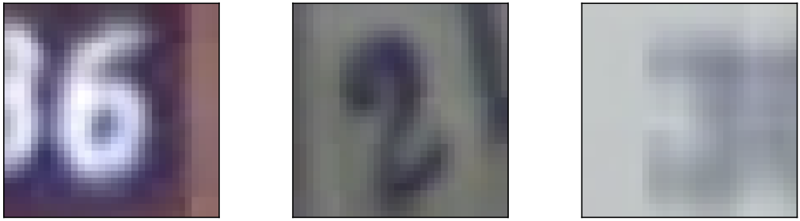
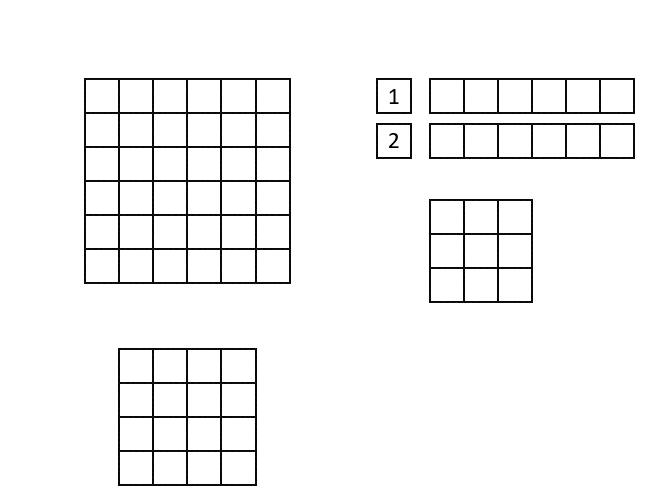

Part 6: Convolutional Neural Networks in hls4ml#
In this notebook you will learn how to train a pruned and quantized convolutional neural network (CNN) and deploy it using hls4ml. For this exercise, we will use the Street View House Numbers (SVHN) Dataset (http://ufldl.stanford.edu/housenumbers/).
The SVHN dataset consists of real-world images of house numbers extracted from Google Street View images. The format is similar to that of the MNIST dataset, but is a much more challenging real-world problem, as illustrated by the examples shown below.
All the images are in RGB format and have been cropped to 32x32 pixels. Unlike MNIST, more than one digit can be present in the same image and in these cases, the center digit is used to assign a label to the image. Each image can belong to one of 10 classes, corresponding to digits 0 through 9.

The SVHN dataset consists of 73,257 images for training (and 531,131 extra samples that are easier to classify and can be used as additional training data) and 26,032 images for testing.
Start with the neccessary imports#
import os
import matplotlib.pyplot as plt
import numpy as np
import time
import tensorflow.compat.v2 as tf
import tensorflow_datasets as tfds
os.environ['PATH'] = os.environ['XILINX_VITIS'] + '/bin:' + os.environ['PATH']
2024-12-17 13:49:34.259726: I tensorflow/core/platform/cpu_feature_guard.cc:182] This TensorFlow binary is optimized to use available CPU instructions in performance-critical operations.
To enable the following instructions: SSE4.1 SSE4.2 AVX AVX2 FMA, in other operations, rebuild TensorFlow with the appropriate compiler flags.
/home/runner/miniconda3/envs/hls4ml-tutorial/lib/python3.10/site-packages/tqdm/auto.py:21: TqdmWarning: IProgress not found. Please update jupyter and ipywidgets. See https://ipywidgets.readthedocs.io/en/stable/user_install.html
from .autonotebook import tqdm as notebook_tqdm
---------------------------------------------------------------------------
KeyError Traceback (most recent call last)
Cell In[1], line 8
5 import tensorflow.compat.v2 as tf
6 import tensorflow_datasets as tfds
----> 8 os.environ['PATH'] = os.environ['XILINX_VITIS'] + '/bin:' + os.environ['PATH']
File ~/miniconda3/envs/hls4ml-tutorial/lib/python3.10/os.py:680, in _Environ.__getitem__(self, key)
677 value = self._data[self.encodekey(key)]
678 except KeyError:
679 # raise KeyError with the original key value
--> 680 raise KeyError(key) from None
681 return self.decodevalue(value)
KeyError: 'XILINX_VITIS'
Fetch the SVHN dataset using Tensorflow Dataset#
In this part we will fetch the trainining, validation and test dataset using Tensorflow Datasets (https://www.tensorflow.org/datasets). We will not use the ‘extra’ training in order to save time, but you could fetch it by adding split='train[:90%]+extra'. We will use the first 90% of the training data for training and the last 10% for validation.
ds_train, info = tfds.load('svhn_cropped', split='train[:90%]', with_info=True, as_supervised=True)
ds_test = tfds.load('svhn_cropped', split='test', shuffle_files=True, as_supervised=True)
ds_val = tfds.load('svhn_cropped', split='train[-10%:]', shuffle_files=True, as_supervised=True)
assert isinstance(ds_train, tf.data.Dataset)
train_size = int(info.splits['train'].num_examples)
input_shape = info.features['image'].shape
n_classes = info.features['label'].num_classes
print('Training on {} samples of input shape {}, belonging to {} classes'.format(train_size, input_shape, n_classes))
fig = tfds.show_examples(ds_train, info)
We’ll use TensorFlow Dataset to prepare our datasets. We’ll fetch the training dataset as tuples, and the test dataset as numpy arrays
def preprocess(image, label, nclasses=10):
image = tf.cast(image, tf.float32) / 255.0
label = tf.one_hot(tf.squeeze(label), nclasses)
return image, label
batch_size = 1024
train_data = ds_train.map(preprocess, n_classes) # Get dataset as image and one-hot encoded labels, divided by max RGB
train_data = train_data.shuffle(4096).batch(batch_size).prefetch(tf.data.experimental.AUTOTUNE)
for example in train_data.take(1):
break
print("X train batch shape = {}, Y train batch shape = {} ".format(example[0].shape, example[1].shape))
val_data = ds_val.map(preprocess, n_classes)
val_data = val_data.batch(batch_size)
val_data = val_data.prefetch(tf.data.experimental.AUTOTUNE)
# For testing, we get the full dataset in memory as it's rather small.
# We fetch it as numpy arrays to have access to labels and images separately
X_test, Y_test = tfds.as_numpy(tfds.load('svhn_cropped', split='test', batch_size=-1, as_supervised=True))
X_test, Y_test = preprocess(X_test, Y_test, nclasses=n_classes)
print("X test batch shape = {}, Y test batch shape = {} ".format(X_test.shape, Y_test.shape))
Defining the model#
We then need to define a model. For the lowest possible latency, each layer should have a maximum number of trainable parameters of 4096. This is due to fixed limits in the Vivado compiler, beyond which maximally unrolled (=parallel) compilation will fail. This will allow us to use strategy = 'latency' in the hls4ml part, rather than strategy = 'resource', in turn resulting in lower latency
from tensorflow.keras.layers import Input
from tensorflow.keras.layers import BatchNormalization
from tensorflow.keras.layers import Conv2D
from tensorflow.keras.regularizers import l1
from tensorflow.keras.layers import MaxPooling2D
from tensorflow.keras.layers import Activation
from tensorflow.keras.layers import Flatten
from tensorflow.keras.layers import Dense
from tensorflow.keras.models import Model
filters_per_conv_layer = [16, 16, 24]
neurons_per_dense_layer = [42, 64]
x = x_in = Input(input_shape)
for i, f in enumerate(filters_per_conv_layer):
print(('Adding convolutional block {} with N={} filters').format(i, f))
x = Conv2D(
int(f),
kernel_size=(3, 3),
strides=(1, 1),
kernel_initializer='lecun_uniform',
kernel_regularizer=l1(0.0001),
use_bias=False,
name='conv_{}'.format(i),
)(x)
x = BatchNormalization(name='bn_conv_{}'.format(i))(x)
x = Activation('relu', name='conv_act_%i' % i)(x)
x = MaxPooling2D(pool_size=(2, 2), name='pool_{}'.format(i))(x)
x = Flatten()(x)
for i, n in enumerate(neurons_per_dense_layer):
print(('Adding dense block {} with N={} neurons').format(i, n))
x = Dense(n, kernel_initializer='lecun_uniform', kernel_regularizer=l1(0.0001), name='dense_%i' % i, use_bias=False)(x)
x = BatchNormalization(name='bn_dense_{}'.format(i))(x)
x = Activation('relu', name='dense_act_%i' % i)(x)
x = Dense(int(n_classes), name='output_dense')(x)
x_out = Activation('softmax', name='output_softmax')(x)
model = Model(inputs=[x_in], outputs=[x_out], name='keras_baseline')
model.summary()
Lets check if this model can be implemented completely unrolled (=parallel)
for layer in model.layers:
if layer.__class__.__name__ in ['Conv2D', 'Dense']:
w = layer.get_weights()[0]
layersize = np.prod(w.shape)
print("{}: {}".format(layer.name, layersize)) # 0 = weights, 1 = biases
if layersize > 4096: # assuming that shape[0] is batch, i.e., 'None'
print("Layer {} is too large ({}), are you sure you want to train?".format(layer.name, layersize))
Looks good! It’s below the Vivado-enforced unroll limit of 4096.
Prune dense and convolutional layers#
Since we’ve seen in the previous notebooks that pruning can be done at no accuracy cost, let’s prune the convolutional and dense layers to 50% sparsity, skipping the output layer
import tensorflow_model_optimization as tfmot
from tensorflow_model_optimization.sparsity import keras as sparsity
from tensorflow_model_optimization.python.core.sparsity.keras import pruning_callbacks
NSTEPS = int(train_size * 0.9) // batch_size # 90% train, 10% validation in 10-fold cross validation
print('Number of training steps per epoch is {}'.format(NSTEPS))
# Prune all convolutional and dense layers gradually from 0 to 50% sparsity every 2 epochs,
# ending by the 10th epoch
def pruneFunction(layer):
pruning_params = {
'pruning_schedule': sparsity.PolynomialDecay(
initial_sparsity=0.0, final_sparsity=0.50, begin_step=NSTEPS * 2, end_step=NSTEPS * 10, frequency=NSTEPS
)
}
if isinstance(layer, tf.keras.layers.Conv2D):
return tfmot.sparsity.keras.prune_low_magnitude(layer, **pruning_params)
if isinstance(layer, tf.keras.layers.Dense) and layer.name != 'output_dense':
return tfmot.sparsity.keras.prune_low_magnitude(layer, **pruning_params)
return layer
model_pruned = tf.keras.models.clone_model(model, clone_function=pruneFunction)
Train baseline#
We’re now ready to train the model! We defined the batch size and n epochs above. We won’t use callbacks that store the best weights only, since this might select a weight configuration that has not yet reached 50% sparsity.
train = True # True if you want to retrain, false if you want to load a previsously trained model
n_epochs = 30
if train:
LOSS = tf.keras.losses.CategoricalCrossentropy()
OPTIMIZER = tf.keras.optimizers.Adam(learning_rate=3e-3, beta_1=0.9, beta_2=0.999, epsilon=1e-07, amsgrad=True)
model_pruned.compile(loss=LOSS, optimizer=OPTIMIZER, metrics=["accuracy"])
callbacks = [
tf.keras.callbacks.EarlyStopping(patience=10, verbose=1),
tf.keras.callbacks.ReduceLROnPlateau(monitor='val_loss', factor=0.5, patience=3, verbose=1),
pruning_callbacks.UpdatePruningStep(),
]
start = time.time()
model_pruned.fit(train_data, epochs=n_epochs, validation_data=val_data, callbacks=callbacks)
end = time.time()
print('It took {} minutes to train Keras model'.format((end - start) / 60.0))
model_pruned.save('pruned_cnn_model.h5')
else:
from qkeras.utils import _add_supported_quantized_objects
from tensorflow_model_optimization.python.core.sparsity.keras import pruning_wrapper
co = {}
_add_supported_quantized_objects(co)
co['PruneLowMagnitude'] = pruning_wrapper.PruneLowMagnitude
model_pruned = tf.keras.models.load_model('pruned_cnn_model.h5', custom_objects=co)
You’ll notice the accuracy is lower than that in the hls4ml CNN paper (https://arxiv.org/abs/2101.05108) despite the model being the same. The reson for this is that we didn’t use the extra training data in order to save time. If you want to futher optimize the network, increasing the training data is a good place to start. Enlarging the model architecture comes at a high latency/resource cost.
Quantization and the fused Conv2D+BatchNormalization layer in QKeras#
Let’s now create a pruned an quantized model using QKeras. For this, we will use a fused Convolutional and BatchNormalization (BN) layer from QKeras, which will further speed up the implementation when we implement the model using hls4ml.
There is currently no fused Dense+BatchNoralization layer available in QKeras, so we’ll use Keras BatchNormalization when BN follows a Dense layer for now. We’ll use the same precision everywhere, namely a bit width of 6 and 0 integer bits (this will be implemented as<6,1> in hls4ml, due to the missing sign-bit). For now, make sure to set use_bias=True in QConv2DBatchnorm to avoid problems during synthesis.
from qkeras import QActivation
from qkeras import QDense, QConv2DBatchnorm
x = x_in = Input(shape=input_shape)
for i, f in enumerate(filters_per_conv_layer):
print(('Adding fused QConv+BN block {} with N={} filters').format(i, f))
x = QConv2DBatchnorm(
int(f),
kernel_size=(3, 3),
strides=(1, 1),
kernel_quantizer="quantized_bits(6,0,alpha=1)",
bias_quantizer="quantized_bits(6,0,alpha=1)",
kernel_initializer='lecun_uniform',
kernel_regularizer=l1(0.0001),
use_bias=True,
name='fused_convbn_{}'.format(i),
)(x)
x = QActivation('quantized_relu(6)', name='conv_act_%i' % i)(x)
x = MaxPooling2D(pool_size=(2, 2), name='pool_{}'.format(i))(x)
x = Flatten()(x)
for i, n in enumerate(neurons_per_dense_layer):
print(('Adding QDense block {} with N={} neurons').format(i, n))
x = QDense(
n,
kernel_quantizer="quantized_bits(6,0,alpha=1)",
kernel_initializer='lecun_uniform',
kernel_regularizer=l1(0.0001),
name='dense_%i' % i,
use_bias=False,
)(x)
x = BatchNormalization(name='bn_dense_{}'.format(i))(x)
x = QActivation('quantized_relu(6)', name='dense_act_%i' % i)(x)
x = Dense(int(n_classes), name='output_dense')(x)
x_out = Activation('softmax', name='output_softmax')(x)
qmodel = Model(inputs=[x_in], outputs=[x_out], name='qkeras')
qmodel.summary()
# Print the quantized layers
from qkeras.autoqkeras.utils import print_qmodel_summary
print_qmodel_summary(qmodel)
You see that a bias quantizer is defined, although we are not using a bias term for the layers. This is set automatically by QKeras. In addition, you’ll note that alpha='1'. This sets the weight scale per channel to 1 (no scaling). The default is alpha='auto_po2', which sets the weight scale per channel to be a power-of-2, such that an actual hardware implementation can be performed by just shifting the result of the convolutional/dense layer to the right or left by checking the sign of the scale and then taking the log2 of the scale.
Let’s now prune and train this model! If you want, you can also train the unpruned version, qmodel and see how the performance compares. We will stick to the pruned one here. Again, we do not use a model checkpoint which stores the best weights, in order to ensure the model is trained to the desired sparsity.
qmodel_pruned = tf.keras.models.clone_model(qmodel, clone_function=pruneFunction)
train = True
n_epochs = 30
if train:
LOSS = tf.keras.losses.CategoricalCrossentropy()
OPTIMIZER = tf.keras.optimizers.Adam(learning_rate=3e-3, beta_1=0.9, beta_2=0.999, epsilon=1e-07, amsgrad=True)
qmodel_pruned.compile(loss=LOSS, optimizer=OPTIMIZER, metrics=["accuracy"])
callbacks = [
tf.keras.callbacks.EarlyStopping(patience=10, verbose=1),
tf.keras.callbacks.ReduceLROnPlateau(monitor='val_loss', factor=0.5, patience=3, verbose=1),
pruning_callbacks.UpdatePruningStep(),
]
start = time.time()
history = qmodel_pruned.fit(train_data, epochs=n_epochs, validation_data=val_data, callbacks=callbacks, verbose=1)
end = time.time()
print('\n It took {} minutes to train!\n'.format((end - start) / 60.0))
qmodel_pruned.save('quantized_pruned_cnn_model.h5')
else:
from qkeras.utils import _add_supported_quantized_objects
from tensorflow_model_optimization.python.core.sparsity.keras import pruning_wrapper
co = {}
_add_supported_quantized_objects(co)
co['PruneLowMagnitude'] = pruning_wrapper.PruneLowMagnitude
qmodel_pruned = tf.keras.models.load_model('quantized_pruned_cnn_model.h5', custom_objects=co)
We note that training a model quantization aware, takes around twice as long as when not quantizing during training! The validation accuracy is very similar to that of the floating point model equivalent, despite containing significantly less information
Performance#
Let’s look at some ROC curves to compare the performance. Lets choose a few numbers so it doesn’t get confusing. Feel free to change the numbers in labels.
predict_baseline = model_pruned.predict(X_test)
test_score_baseline = model_pruned.evaluate(X_test, Y_test)
predict_qkeras = qmodel_pruned.predict(X_test)
test_score_qkeras = qmodel_pruned.evaluate(X_test, Y_test)
print('Keras accuracy = {} , QKeras 6-bit accuracy = {}'.format(test_score_baseline[1], test_score_qkeras[1]))
import matplotlib.pyplot as plt
import pandas as pd
from sklearn import metrics
labels = ['%i' % nr for nr in range(0, n_classes)] # If you want to look at all the labels
# labels = ['0','1','9'] # Look at only a few labels, here for digits 0, 1 and 9
print('Plotting ROC for labels {}'.format(labels))
df = pd.DataFrame()
df_q = pd.DataFrame()
fpr = {}
tpr = {}
auc1 = {}
fpr_q = {}
tpr_q = {}
auc1_q = {}
%matplotlib inline
colors = ['#67001f', '#b2182b', '#d6604d', '#f4a582', '#fddbc7', '#d1e5f0', '#92c5de', '#4393c3', '#2166ac', '#053061']
fig, ax = plt.subplots(figsize=(10, 10))
for i, label in enumerate(labels):
df[label] = Y_test[:, int(label)]
df[label + '_pred'] = predict_baseline[:, int(label)]
fpr[label], tpr[label], threshold = metrics.roc_curve(df[label], df[label + '_pred'])
auc1[label] = metrics.auc(fpr[label], tpr[label])
df_q[label] = Y_test[:, int(label)]
df_q[label + '_pred'] = predict_qkeras[:, int(label)]
fpr_q[label], tpr_q[label], threshold_q = metrics.roc_curve(df_q[label], df_q[label + '_pred'])
auc1_q[label] = metrics.auc(fpr_q[label], tpr_q[label])
plt.plot(
fpr[label],
tpr[label],
label=r'{}, AUC Keras = {:.1f}% AUC QKeras = {:.1f}%)'.format(label, auc1[label] * 100, auc1_q[label] * 100),
linewidth=1.5,
c=colors[i],
linestyle='solid',
)
plt.plot(fpr_q[label], tpr_q[label], linewidth=1.5, c=colors[i], linestyle='dotted')
plt.semilogx()
plt.ylabel("True Positive Rate")
plt.xlabel("False Positive Rate")
plt.xlim(0.01, 1.0)
plt.ylim(0.5, 1.1)
plt.legend(loc='lower right')
plt.figtext(
0.2,
0.83,
r'Accuracy Keras = {:.1f}% QKeras 8-bit = {:.1f}%'.format(test_score_baseline[1] * 100, test_score_qkeras[1] * 100),
wrap=True,
horizontalalignment='left',
verticalalignment='center',
)
from matplotlib.lines import Line2D
lines = [Line2D([0], [0], ls='-'), Line2D([0], [0], ls='--')]
from matplotlib.legend import Legend
leg = Legend(ax, lines, labels=['Keras', 'QKeras'], loc='lower right', frameon=False)
ax.add_artist(leg)
The difference in AUC between the fp32 Keras model and the 8-bit QKeras model, is small, as we have seen for the previous examples. You can find a bonus exercise below, Bonus: Automatic quantization, where we’ll use AutoQKeras to find the best heterogeneously quantized model, given a set of resource and accuracy constriants.
Check sparsity#
Let’s also check the per-layer sparsity:
def doWeights(model):
allWeightsByLayer = {}
for layer in model.layers:
if (layer._name).find("batch") != -1 or len(layer.get_weights()) < 1:
continue
weights = layer.weights[0].numpy().flatten()
allWeightsByLayer[layer._name] = weights
print('Layer {}: % of zeros = {}'.format(layer._name, np.sum(weights == 0) / np.size(weights)))
labelsW = []
histosW = []
for key in reversed(sorted(allWeightsByLayer.keys())):
labelsW.append(key)
histosW.append(allWeightsByLayer[key])
fig = plt.figure(figsize=(10, 10))
bins = np.linspace(-1.5, 1.5, 50)
plt.hist(histosW, bins, histtype='stepfilled', stacked=True, label=labelsW, edgecolor='black')
plt.legend(frameon=False, loc='upper left')
plt.ylabel('Number of Weights')
plt.xlabel('Weights')
plt.figtext(0.2, 0.38, model._name, wrap=True, horizontalalignment='left', verticalalignment='center')
doWeights(model_pruned)
doWeights(qmodel_pruned)
We see that 50% of the weights per layer are set to zero, as expected. Now, let’s synthesize the floating point Keras model and the QKeras quantized model!
CNNs in hls4ml#
In this part, we will take the two models we trained above (the floating-point 32 Keras model and the 6-bit QKeras model), and synthesize them with hls4ml. Although your models are probably already in memory, let’s load them from scratch. We need to pass the appropriate custom QKeras/pruning layers when loading, and remove the pruning parameters that were saved together with the model.
from tensorflow_model_optimization.sparsity.keras import strip_pruning
from tensorflow_model_optimization.python.core.sparsity.keras import pruning_wrapper
from qkeras.utils import _add_supported_quantized_objects
co = {}
_add_supported_quantized_objects(co)
co['PruneLowMagnitude'] = pruning_wrapper.PruneLowMagnitude
model = tf.keras.models.load_model('pruned_cnn_model.h5', custom_objects=co)
model = strip_pruning(model)
qmodel = tf.keras.models.load_model('quantized_pruned_cnn_model.h5', custom_objects=co)
qmodel = strip_pruning(qmodel)
Now, we need to define the hls4ml and Vivado configurations. Two things will change with respect to what was done in the previous exercises. First, we will use io_type='io_stream' in the Vitis_HLS configuration.
You must use io_type='io_stream' if attempting to synthesize a large convolutional neural network.
The CNN implementation in hls4ml is based on streams, which are synthesized in hardware as first in, first out (FIFO) buffers. Shift registers are used to keep track of the last <kernel height - 1> rows of input pixels, and maintains a shifting snapshot of the convolution kernel.
This is illustrated in the gif below. Here, the input image is at the top-left and the output image at the bottom left. The top right image shows the internal state of the shift registers and convolutional kernel. The red square indicates the current pixels contained within the convolutional kernel.

Lastly, we will use ['Strategy'] = 'Latency' for all the layers in the hls4ml configuration. If one layer would have >4096 elements, we sould set ['Strategy'] = 'Resource' for that layer, or increase the reuse factor by hand. You can find examples of how to do this below.
import hls4ml
import plotting
# First, the baseline model
hls_config = hls4ml.utils.config_from_keras_model(
model, granularity='name', backend='Vitis', default_precision='ap_fixed<16,6>'
)
plotting.print_dict(hls_config)
hls_model = hls4ml.converters.convert_from_keras_model(
model,
hls_config=hls_config,
backend='Vitis',
output_dir='model_1/hls4ml_prj',
part='xcu250-figd2104-2L-e',
io_type='io_stream',
)
hls_model.compile()
Let’s get a nice overview over the various shapes and precisions used for each layer through hls4ml.utils.plot_model, as well as look at the weight profile using hls4ml.model.profiling.numerical. The weight profiling returns two plots: Before (top) and after (bottom) various optimizations applied to the HLS model before the final translation to HLS, for instance the fusing of Dense and BatchNormalization layers.
hls4ml.utils.plot_model(hls_model, show_shapes=True, show_precision=True, to_file=None)
hls4ml.model.profiling.numerical(model=model, hls_model=hls_model)
The colored boxes are the distribution of the weights of the model, and the gray band illustrates the numerical range covered by the chosen fixed point precision. As we configured, this model uses a precision of ap_fixed<16,6> for all layers of the model. Let’s now build our QKeras model
# Then the QKeras model
hls_config_q = hls4ml.utils.config_from_keras_model(qmodel, granularity='name', backend='Vitis')
hls_config_q['Model']['ReuseFactor'] = 1
hls_config['Model']['Precision'] = 'ap_fixed<16,6>'
hls_config_q['LayerName']['output_softmax']['Strategy'] = 'Stable'
plotting.print_dict(hls_config_q)
cfg_q = hls4ml.converters.create_config(backend='Vitis')
cfg_q['IOType'] = 'io_stream' # Must set this if using CNNs!
cfg_q['HLSConfig'] = hls_config_q
cfg_q['KerasModel'] = qmodel
cfg_q['OutputDir'] = 'quantized_pruned_cnn/'
cfg_q['XilinxPart'] = 'xcu250-figd2104-2L-e'
hls_model_q = hls4ml.converters.keras_to_hls(cfg_q)
hls_model_q.compile()
Let’s plot the model and profile the weights her too
hls4ml.model.profiling.numerical(model=qmodel, hls_model=hls_model_q)
hls4ml.utils.plot_model(hls_model_q, show_shapes=True, show_precision=True, to_file=None)
For the 6-bit QKeras model, we see that different precisions are used for different layers.
Accuracy with bit-accurate emulation#
Let’s check that the hls4ml accuracy matches the original. This usually takes some time, so let’s do it over a reduced dataset
X_test_reduced = X_test[:3000]
Y_test_reduced = Y_test[:3000]
y_predict = model.predict(X_test_reduced)
y_predict_hls4ml = hls_model.predict(np.ascontiguousarray(X_test_reduced))
y_predict_q = qmodel.predict(X_test_reduced)
y_predict_hls4ml_q = hls_model_q.predict(np.ascontiguousarray(X_test_reduced))
import plotting
from sklearn.metrics import accuracy_score
def plotROC(Y, y_pred, y_pred_hls4ml, label="Model"):
accuracy_keras = float(accuracy_score(np.argmax(Y, axis=1), np.argmax(y_pred, axis=1)))
accuracy_hls4ml = float(accuracy_score(np.argmax(Y, axis=1), np.argmax(y_pred_hls4ml, axis=1)))
print("Accuracy Keras: {}".format(accuracy_keras))
print("Accuracy hls4ml: {}".format(accuracy_hls4ml))
fig, ax = plt.subplots(figsize=(9, 9))
_ = plotting.makeRoc(Y, y_pred, labels=['%i' % nr for nr in range(n_classes)])
plt.gca().set_prop_cycle(None) # reset the colors
_ = plotting.makeRoc(Y, y_pred_hls4ml, labels=['%i' % nr for nr in range(n_classes)], linestyle='--')
from matplotlib.lines import Line2D
lines = [Line2D([0], [0], ls='-'), Line2D([0], [0], ls='--')]
from matplotlib.legend import Legend
leg = Legend(ax, lines, labels=['Keras', 'hls4ml'], loc='lower right', frameon=False)
ax.add_artist(leg)
plt.figtext(0.2, 0.38, label, wrap=True, horizontalalignment='left', verticalalignment='center')
plt.ylim(0.01, 1.0)
plt.xlim(0.7, 1.0)
# Plot the pruned floating point model:
plotROC(Y_test_reduced, y_predict, y_predict_hls4ml, label="Keras")
# Plot the pruned and quantized QKeras model
plotROC(Y_test_reduced, y_predict_q, y_predict_hls4ml_q, label="QKeras")
Looks good! Let’s synthesize the models.
Logic synthesis#
This takes quite a while for CNN models, up to one hour for the models considered here. In the interest of time, we have therefore provided the neccessary reports for the models considered. You can also synthesize them yourself if you have time, and as usual follow the progress using tail -f pruned_cnn/vivado_hls.log and tail -f quantized_pruned_cnn/vivado_hls.log.
synth = False # Only if you want to synthesize the models yourself (>1h per model) rather than look at the provided reports.
if synth:
hls_model.build(csim=False, synth=True, vsynth=True)
hls_model_q.build(csim=False, synth=True, vsynth=True)
We extract the latency from the C synthesis, namely the report in <project_dir>/myproject_prj/solution1/syn/report/myproject_csynth.rpt. A more accurate latency estimate can be obtained from running cosim by passing hls_model.build(csim=False, synth=True, vsynth=True, cosim=True) ( = C/RTL cosimulation, synthesised HLS code is run on a simulator and tested on C test bench) but this takes a lot of time so we will skip it here.
The resource estimates are obtained from the Vivado logic synthesis, and can be extracted from the report in <project_dir>/vivado_synth.rpt. Let’s fetch the most relevant numbers:
def getReports(indir):
data_ = {}
report_vsynth = Path('{}/vivado_synth.rpt'.format(indir))
report_csynth = Path('{}/myproject_prj/solution1/syn/report/myproject_csynth.rpt'.format(indir))
if report_vsynth.is_file() and report_csynth.is_file():
print('Found valid vsynth and synth in {}! Fetching numbers'.format(indir))
# Get the resources from the logic synthesis report
with report_vsynth.open() as report:
lines = np.array(report.readlines())
data_['lut'] = int(lines[np.array(['CLB LUTs*' in line for line in lines])][0].split('|')[2])
data_['ff'] = int(lines[np.array(['CLB Registers' in line for line in lines])][0].split('|')[2])
data_['bram'] = float(lines[np.array(['Block RAM Tile' in line for line in lines])][0].split('|')[2])
data_['dsp'] = int(lines[np.array(['DSPs' in line for line in lines])][0].split('|')[2])
data_['lut_rel'] = float(lines[np.array(['CLB LUTs*' in line for line in lines])][0].split('|')[5])
data_['ff_rel'] = float(lines[np.array(['CLB Registers' in line for line in lines])][0].split('|')[5])
data_['bram_rel'] = float(lines[np.array(['Block RAM Tile' in line for line in lines])][0].split('|')[5])
data_['dsp_rel'] = float(lines[np.array(['DSPs' in line for line in lines])][0].split('|')[5])
with report_csynth.open() as report:
lines = np.array(report.readlines())
lat_line = lines[np.argwhere(np.array(['Latency (cycles)' in line for line in lines])).flatten()[0] + 3]
data_['latency_clks'] = int(lat_line.split('|')[2])
data_['latency_mus'] = float(lat_line.split('|')[2]) * 5.0 / 1000.0
data_['latency_ii'] = int(lat_line.split('|')[6])
return data_
from pathlib import Path
import pprint
data_pruned_ref = getReports('pruned_cnn')
data_quantized_pruned = getReports('quantized_pruned_cnn')
print("\n Resource usage and latency: Pruned")
pprint.pprint(data_pruned_ref)
print("\n Resource usage and latency: Pruned + quantized")
pprint.pprint(data_quantized_pruned)
We see that the latency is of around 5 microseconds for both the quantized and the unquantized model, but that the resources are signifcantly reduced using QKeras.
Congratulations! You have now reached the end of this notebook. If you have some spare time, you can have a look at the bonus exercise below, where you will learn how to perform a bayesian optimization over the QKeras quantizers in order to obtain an optimally heterogeneously quantized model.
Bonus exercise: Automatic quantization with AutoQKeras#
In this bonus exercise, you will learn how to find the optimal heterogeneously quantized model using AutoQKeras. For more details, you can look at the AutoQKeras notebook.
Let’s first check the estimated energy consumption of the QKeras 6-bit model using QTools. By setting for_reference=True you can print out the unquantized model energy consumption and compare the two. Note that this only works for QKeras layers.
filters_per_conv_layer = [16, 16, 24]
neurons_per_dense_layer = [42, 64]
x = x_in = Input(input_shape)
for i, f in enumerate(filters_per_conv_layer):
print(('Adding convolutional block {} with N={} filters').format(i, f))
x = Conv2D(
int(f),
kernel_size=(3, 3),
strides=(1, 1),
kernel_initializer='lecun_uniform',
kernel_regularizer=l1(0.0001),
use_bias=False,
name='conv_{}'.format(i),
)(x)
x = BatchNormalization(name='bn_conv_{}'.format(i))(x)
x = Activation('relu', name='conv_act_%i' % i)(x)
x = MaxPooling2D(pool_size=(2, 2), name='pool_{}'.format(i))(x)
x = Flatten()(x)
for i, n in enumerate(neurons_per_dense_layer):
print(('Adding dense block {} with N={} neurons').format(i, n))
x = Dense(n, kernel_initializer='lecun_uniform', kernel_regularizer=l1(0.0001), name='dense_%i' % i, use_bias=False)(x)
x = BatchNormalization(name='bn_dense_{}'.format(i))(x)
x = Activation('relu', name='dense_act_%i' % i)(x)
x = Dense(int(n_classes), name='output_dense')(x)
x_out = Activation('softmax', name='output_softmax')(x)
baseline_model = Model(inputs=[x_in], outputs=[x_out], name='keras_baseline')
LOSS = tf.keras.losses.CategoricalCrossentropy()
OPTIMIZER = tf.keras.optimizers.Adam(learning_rate=3e-3, beta_1=0.9, beta_2=0.999, epsilon=1e-07, amsgrad=True)
baseline_model.compile(loss=LOSS, optimizer=OPTIMIZER, metrics=["accuracy"])
from qkeras import print_qstats
# for automatic quantization
import pprint
from qkeras.autoqkeras import *
from qkeras import *
from qkeras.utils import model_quantize
from qkeras.qtools import run_qtools
from qkeras.qtools import settings as qtools_settings
from tensorflow_model_optimization.python.core.sparsity.keras import pruning_wrapper
from qkeras import quantized_bits
from qkeras import QDense, QActivation
q = run_qtools.QTools(
baseline_model,
process="horowitz",
source_quantizers=[quantized_bits(16, 5, 1)],
is_inference=True,
weights_path=None,
keras_quantizer="fp16",
keras_accumulator="fp16",
for_reference=False,
)
q.qtools_stats_print()
energy_dict = q.pe(
weights_on_memory="fixed", activations_on_memory="fixed", min_sram_size=8 * 16 * 1024 * 1024, rd_wr_on_io=False
)
# get stats of energy distribution in each layer
energy_profile = q.extract_energy_profile(qtools_settings.cfg.include_energy, energy_dict)
# extract sum of energy of each layer according to the rule specified in
# qtools_settings.cfg.include_energy
total_energy = q.extract_energy_sum(qtools_settings.cfg.include_energy, energy_dict)
pprint.pprint(energy_profile)
print()
print("Total energy: {:.6f} uJ".format(total_energy / 1000000.0))
Now, lets use AutoQKeras to find an optimally heterogeneously quantized model for us. For more details, check the AutoQKeras tutorial linked above. As baseline model, we’ll use the pruned floating point Keras model from above.
# These are the quantizers we'll test in the bayesian optimization
quantization_config = {
"kernel": {
"quantized_bits(2,0,1,alpha=1.0)": 2,
"quantized_bits(4,0,1,alpha=1.0)": 4,
"quantized_bits(6,0,1,alpha=1.0)": 6,
"quantized_bits(8,0,1,alpha=1.0)": 8,
},
"bias": {
"quantized_bits(2,0,1,alpha=1.0)": 2,
"quantized_bits(4,0,1,alpha=1.0)": 4,
"quantized_bits(6,0,1,alpha=1.0)": 6,
"quantized_bits(8,0,1,alpha=1.0)": 8,
},
"activation": {
"quantized_relu(3,1)": 3,
"quantized_relu(4,2)": 4,
"quantized_relu(8,2)": 8,
"quantized_relu(8,4)": 8,
"quantized_relu(16,6)": 16,
},
"linear": {
"quantized_bits(2,0,1,alpha=1.0)": 2,
"quantized_bits(4,0,1,alpha=1.0)": 4,
"quantized_bits(6,0,1,alpha=1.0)": 6,
"quantized_bits(8,0,1,alpha=1.0)": 8,
},
}
# These are the layer types we will quantize
limit = {
"Dense": [8, 8, 16],
"Conv2D": [8, 8, 16],
"Activation": [16],
}
# Use this if you want to minimize the model bit size
goal_bits = {
"type": "bits",
"params": {
"delta_p": 8.0, # We tolerate up to a +8% accuracy change
"delta_n": 8.0, # We tolerate down to a -8% accuracy change
"rate": 2.0, # We want a x2 times smaller model
"stress": 1.0, # Force the reference model size to be smaller by setting stress<1
"input_bits": 8,
"output_bits": 8,
"ref_bits": 8,
"config": {"default": ["parameters", "activations"]},
},
}
# Use this if you want to minimize the model energy consumption
goal_energy = {
"type": "energy",
"params": {
"delta_p": 8.0,
"delta_n": 8.0,
"rate": 2.0,
"stress": 1.0,
"process": "horowitz",
"parameters_on_memory": ["sram", "sram"],
"activations_on_memory": ["sram", "sram"],
"rd_wr_on_io": [False, False],
"min_sram_size": [0, 0],
"source_quantizers": ["fp32"],
"reference_internal": "int8",
"reference_accumulator": "int32",
},
}
run_config = {
"goal": goal_energy,
"quantization_config": quantization_config,
"learning_rate_optimizer": False,
"transfer_weights": False, # Randomely initialize weights
"mode": "bayesian", # This can be bayesian,random,hyperband
"seed": 42,
"limit": limit,
"tune_filters": "layer",
"tune_filters_exceptions": "^output",
"distribution_strategy": None,
"max_trials": 5, # Let's just do 5 trials for this demonstrator, ideally you should do as many as possible
}
from qkeras.autoqkeras import AutoQKeras
autoqk = AutoQKeras(baseline_model, output_dir="autoq_cnn", metrics=["acc"], custom_objects={}, **run_config)
autoqk.fit(train_data, validation_data=val_data, epochs=15)
aqmodel = autoqk.get_best_model()
print_qmodel_summary(aqmodel)
# Train for the full epochs
callbacks = [
tf.keras.callbacks.EarlyStopping(patience=10, verbose=1),
tf.keras.callbacks.ReduceLROnPlateau(monitor='val_loss', factor=0.5, patience=3, verbose=1),
]
start = time.time()
history = aqmodel.fit(train_data, epochs=n_epochs, validation_data=val_data, callbacks=callbacks, verbose=1)
end = time.time()
print('\n It took {} minutes to train!\n'.format((end - start) / 60.0))
# This model has some remnants from the optimization procedure attached to it, so let's define a new one
aqmodel.save_weights("autoqkeras_cnn_weights.h5")
layers = [l for l in aqmodel.layers]
x = layers[0].output
for i in range(1, len(layers)):
x = layers[i](x)
new_model = Model(inputs=[layers[0].input], outputs=[x])
LOSS = tf.keras.losses.CategoricalCrossentropy()
OPTIMIZER = tf.keras.optimizers.Adam(learning_rate=3e-3, beta_1=0.9, beta_2=0.999, epsilon=1e-07, amsgrad=True)
new_model.compile(loss=LOSS, optimizer=OPTIMIZER, metrics=["accuracy"])
new_model.summary()
new_model.load_weights("autoqkeras_cnn_weights.h5")
print_qmodel_summary(new_model)
Let’s check what the best heterogeneously quantized model looks like (keep in mind we only did a few trials, the optimization obviosuly didn’t have time to converge at the minimum but yo get the idea!)
hls_config_aq = hls4ml.utils.config_from_keras_model(new_model, granularity='name')
hls_config_aq['Model']['ReuseFactor'] = 1
hls_config_aq['Model']['Precision'] = 'ap_fixed<16,6>'
hls_config_aq['LayerName']['output_softmax']['Strategy'] = 'Stable'
plotting.print_dict(hls_config_aq)
cfg_aq = hls4ml.converters.create_config(backend='Vivado')
cfg_aq['IOType'] = 'io_stream' # Must set this if using CNNs!
cfg_aq['HLSConfig'] = hls_config_aq
cfg_aq['KerasModel'] = new_model
cfg_aq['OutputDir'] = 'autoqkeras_cnn/'
cfg_aq['XilinxPart'] = 'xcu250-figd2104-2L-e'
hls_model_aq = hls4ml.converters.keras_to_hls(cfg_aq)
hls_model_aq.compile()
y_predict_aq = aqmodel.predict(X_test_reduced)
y_predict_hls4ml_aq = hls_model_aq.predict(np.ascontiguousarray(X_test_reduced))
accuracy_keras = float(accuracy_score(np.argmax(Y_test_reduced, axis=1), np.argmax(y_predict_aq, axis=1)))
accuracy_hls4ml = float(accuracy_score(np.argmax(Y_test_reduced, axis=1), np.argmax(y_predict_hls4ml_aq, axis=1)))
print("Accuracy AutoQ Keras: {}".format(accuracy_keras))
print("Accuracy AutoQ hls4ml: {}".format(accuracy_hls4ml))
The accuracy is slightly lower for this heterogeneously quantized model. Due to some randomness in the optimization procedure, you’re going to have to synthesize this one yourself!
synth = True
if synth:
hls_model_aq.build(csim=False, synth=True, vsynth=True)
data_autoq = getReports('autoq_cnn')
print("\n Resource usage and latency: AutoQ")
pprint.pprint(data_autoq)